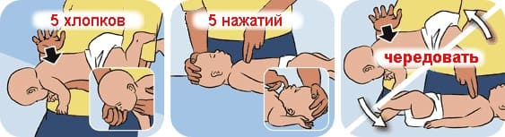
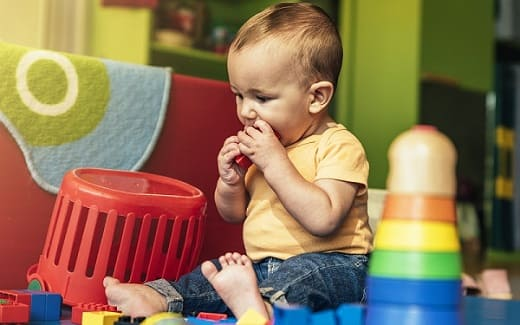

УДУШЬЕ
Дети часто задыхаются, когда еда или напиток «попадает не в то горло» — в трахею. Мягкая пища или жидкость обычно выкашливаются после нескольких рвотных позывов и отрывистого сухого кашля. Твердые продукты, например, виноградина или кусок сосиски, могут застрять в дыхательных путях, создав серьезную проблему. Ребенок впадает в панику, не может кричать, говорить, кашлять или дышать. В течение 1—2 минут он может потерять сознание, так что действовать надо быстро. Мы надеемся, что вы читаете это заранее, чтобы знать, что делать, и быть готовым в случае возникновения такой ситуации. Позвоните в «Скорую помощь», включив громкую связь — они будут руководить вашими действиями по телефону.
Если ваш ребенок кричит или кашляет, значит, он подавился не очень сильно. Поощрите его продолжать кашлять. В течение минуты или около того дыхательные пути должны очиститься. Не давайте ему пить, если он подавился не чем-либо сухим и крошащимся (вроде крекера), лишняя жидкость может усугубить проблему. Если ребенок синеет или теряет сознание, звоните в «Скорую помощь».
Если ребенок не дышит, не может кашлять или издать хоть какой-нибудь звук, вы должны попытаться сместить застрявший предмет.
Если ребенок СТАРШЕ 1 ГОДА, выполните прием Геймлиха:
- Зовите на помощь и просите кого-нибудь позвонить в «Скорую помощь».
- Обхватите ребенка сзади (наподобие «медвежьей хватки») руками ниже его нижних ребер, но выше пупка. Одну кисть сожмите в кулак, а другой охватите его.
- Резко, толчком потяните руки вверх и назад (как будто пытаетесь поднять человека), чтобы поток воздуха из сжатых легких вытолкнул инородный предмет.
- Повторите это действие 10 раз, пока инородное тело не сместится.
- Если ребенок слишком тяжелый и вы не можете его удержать в руках или он потерял сознание и выскальзывает из ваших рук, уложите его на спину. Обеими руками давите снизу-вверх на его живот ниже ребер, чтобы сместить помеху дыханию.
Если ребенок МЛАДШЕ 1 ГОДА, используйте хлопки по спине и толчки по груди.
- Вызовите «Скорую помощь» прежде, чем начать выполнение приема Геймлиха у детей младше 1 года. Чем скорее прибудет помощь, тем лучше.
- Садясь, положите ребенка лицом на свое предплечье так, чтобы голова ребенка была направлена вниз.
- Пять раз ударьте кистью между лопатками. Это изгонит воздух из легких, чтобы он сместил инородный предмет.
- Если младенец все еще не дышит, переверните его на спину и сделайте пять быстрых толчков в грудь двумя пальцами, положенными в нижнюю треть грудины.
- Благодаря чередованию пяти ударов по спине и трех толчков по груди, инородное тело смещается.
- Избегайте брюшных толчков (прием Геймлиха) у младенцев до года, потому что при этом можно повредить печень или селезенку.

Если ребенок теряет сознание и перестал дышать, начинайте дыхание рот в рот:
- Откройте его рот и осмотрите, нет ли перекрывающих дыхание предметов. Если вы видите инородное тело, постарайтесь удалить его, подцепив пальцем снизу. Ни в коем случае не пытайтесь орудовать пальцем вслепую — так вы можете протолкнуть инородное тело еще глубже в дыхательные пути.
- Делайте дыхание рот в рот, приложив свои губы боком ко рту ребенка (и к носу у младенцев). Выдох в рот делайте как будто через препятствие. Младенцам вдохните лишь небольшую порцию воздуха. Вы должны видеть, что грудь ребенка поднимается при каждом вашем дыхательном движении. Если вы не видите поднятия груди после двух дыханий, поменяйте положение тела ребенка, убедившись, что шея не согнута вперед или назад, и попробуйте сделать еще два дыхания. Если теперь грудь приподнимается, продолжайте вдувать воздух каждые 5 секунд до прибытия помощи или пока ребенок не начнет дышать самостоятельно. Кроме того, начните проверять пульс и отметьте начало СЛР. Если же грудь ребенка не приподнимается при ваших дыханиях — возможно, что дыхательные пути все еще заблокированы. Повторите прием Геймлиха или удары по спине и толчки в грудь.
- Помните о необходимости время от времени проверять рот в поисках вытолкнутых инородных тел.
КАК ПРЕДОТВРАТИТЬ УДУШЬЕ
Дети могут подавиться едой и чем угодно. Вот несколько простых советов, как избежать опасной для жизни ситуации.
Продукты:
- Старайтесь не давать маленьким детям твердые продукты. Орехи, попкорн, жевательная резинка, карамель, семечки подсолнечника, апельсинов, арбуза, вишневые косточки, сырые морковь, горох, сельдерей, твердые фрукты вроде свежих яблок — потенциальные причины удушья. Большинство детей младше 4 лет не понимают, что их надо полностью прожевать или выплюнуть.
- Разделывайте твердые продукты на маленькие кусочки: сосиски, колбасу, большие куски мяса, виноград, ириски, карамель и прочие опасные лакомства.
- Убедитесь, что приходящие няни и старшие дети знают, что нельзя давать эти продукты малышам.
- Учите детей как следует прожевывать еду перед тем, как проглотить.
- Не позволяйте детям набивать полный рот, как бурундук.
- Крик или смех во время еды надо запрещать.
- Нельзя жевать жевательную резинку во время спортивных игр.
Игрушки:
- Не позволяйте младенцам играть с игрушками, у которых есть маленькие съемные детали — их легко проглотить или подавиться ими.
- Убедитесь, что старшие дети хранят свои маленькие игрушки (Лего, обувь Барби и т.п.) в безопасном месте.
- Держите воздушные шарики в недосягаемом для детей месте; они представляют серьезную опасность в плане удушья, как надутые, так и сдутые.

Предметы домашнего обихода:
- Убедитесь, что должным образом избавились от электронных батареек.
- Убедитесь, что как следует убрали дом после вечеринки: после нее на полу в пределах досягаемости ребенка остается множество предметов, которыми можно подавиться.
- Пользуйтесь специальными замками, чтобы не допустить любопытные пальчики к мелкому кухонному мусору или в мусорное ведро.
Здоровье ребенка от докторов Сирс / Сирс У. и др.